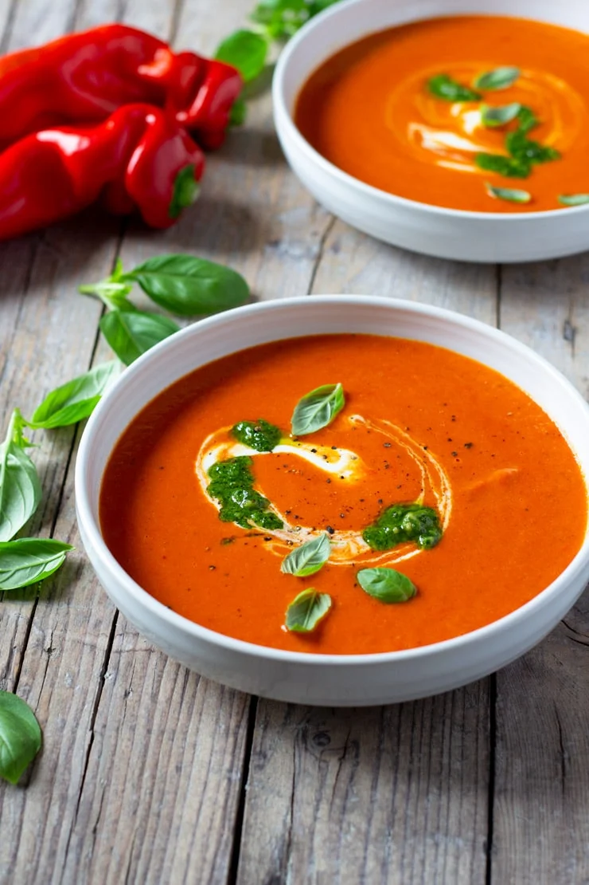

Bell pepper soup

Description
A rich and intensely flavoured Roasted Red Pepper Soup made with sweet, charred red peppers, garlic, sun dried tomatoes for an extra flavour kick and topped with homemade basil pesto and a creme fraiche swirl. Warm, comforting and easy!
Ingredients
- 6 red bell or pointed pepeprs
- 1 yelllow union
- 5 sun dried tomatoes jarred
- 4 garlic cloves peeled and whole
- 1 squeeze lemon juice
- 2.5 cups vegetable stock
- salt and pepper to season
- 1 tablespoon olive oil
- 1-2 tablespoon homemade pest
- creme fraiche for topping
Steps
- Pre-heat the oven to 200°C
- Roughly chop the red peppers and place in a large baking tray with peeled whole garlic cloves. Drizzle with olive oil and sprinkle with salt and pepper then roast in the oven until slightly charred (around 40 minutes).
- Finely chop a white onion and saute in a large pot with a little olive oil until translucent and soft. Once soft, add the roasted peppers and garlic, sun dried tomatoes and vegetable stock.
- Simmer for 10 minutes then turn off the heat and blend until completely smooth using an immersion blender. Taste for seasoning, I only add pepper because there's enough saltiness from the stock and sun dried tomatoes and pre seasoned peppers.
- Add a small splash of freshly squeezed lemon juice, stir and serve with a drizzle of creme fraiche and homemade pesto. Grab a hunk of crusty bread and dive in.